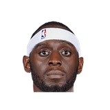

“I just think when Rondo started to appear and started to [say], ‘Hey, here I am,’ it wasn’t a mutual, ‘Hey, this is our new shining star’ with Ray. It was more, ‘Hey, this is K.G., Paul, Ray Allen’s team.’ And I just feel like it could have been stopped. Whatever that [was], it could have been stopped.”
What Glen Davis has said about other NBA players and coaches
14 quotes from Glen Davis about 15 other people around the NBA, newest first. Each one links to its original source.
Best quotes
Glen Davis on Doc Rivers:
“He was a good motivator and he was a good offensive scheme coach. He knew what to do offensively. And he was a good motivator meaning as far as just the moment. There were moments where we needed him to say something to push us through and he would come and say something dope. But as far as player-wise,I think he was a horrible coach for players. When you look at all the players that he's kind of killed their careers as far as just, it's like he he got a lot of kills. He killed a lot of players that could have played a little bit more, but you know.”
“Kendrick Perkins, you see him on ESPN. Tony Allen—he was literally the third person on the indictment, with his wife. He's not walking in jail. Darius Miles—he's not walking in jail. And these guys got money, like thousands of dollars. How'd I end up in jail and these guys are on probation/walking free; their whole life is still intact. “I think the NBA let the feds pick who they wanted to choose. 180 people were investigated/supenoed. We didn't hear about all those people. We just heard about the 22 people that got caught, or that got jammed in the situation. A lot of people pleaded out. They didn't go to jail. They didn't even go get time served.”
Glen Davis on Kendrick Perkins, Darius Miles, Tony AllenClutch Points
What NBA players and coaches have said about Glen Davis →
Quotes per season
Glen Davis talks most about
 Glen Davis on Dwight Howard3 quotes
Glen Davis on Dwight Howard3 quotes- Glen Davis on Juan Manuel Marquez2 quotes
 Glen Davis on Tony Allen2 quotes
Glen Davis on Tony Allen2 quotes Glen Davis on Victor Wembanyama2 quotes
Glen Davis on Victor Wembanyama2 quotes- Corey Maggette1 quote

Darius Miles1 quote Doc Rivers1 quote
Doc Rivers1 quote Gilbert Arenas1 quote
Gilbert Arenas1 quote- Jacque Vaughn1 quote
 Kendrick Perkins1 quote
Kendrick Perkins1 quote LeBron James1 quote
LeBron James1 quote- Manny Pacquiao1 quote
2026-27
5 quotesGlen Big Baby Davis on LeBron James:
“I hated guarding him. He was so good. He is really my GOAT.”
Glen Big Baby Davis on Victor Wembanyama:
“Right now, I just think he is a young kid, got a big upside. He gives me baby giraffe type of vibes. He is so tall and just awkward moving sometimes because he is 7'4, 7'5.”
Glen Davis on Doc Rivers:
“He was a good motivator and he was a good offensive scheme coach. He knew what to do offensively. And he was a good motivator meaning as far as just the moment. There were moments where we needed him to say something to push us through and he would come and say something dope. But as far as player-wise,I think he was a horrible coach for players. When you look at all the players that he's kind of killed their careers as far as just, it's like he he got a lot of kills. He killed a lot of players that could have played a little bit more, but you know.”
“Kendrick Perkins, you see him on ESPN. Tony Allen—he was literally the third person on the indictment, with his wife. He's not walking in jail. Darius Miles—he's not walking in jail. And these guys got money, like thousands of dollars. How'd I end up in jail and these guys are on probation/walking free; their whole life is still intact. “I think the NBA let the feds pick who they wanted to choose. 180 people were investigated/supenoed. We didn't hear about all those people. We just heard about the 22 people that got caught, or that got jammed in the situation. A lot of people pleaded out. They didn't go to jail. They didn't even go get time served.”
Glen Davis on Kendrick Perkins, Darius Miles, Tony AllenClutch Points
“Matt Barnes, Stephen Jack; all those people were investigated. Gilbert Arenas, Corey Maggette, Cutino Mobley; thousands of NBA players were investigated. They just let some of them go to jail. Some of them, the fed got, like, Tony Allen. He didn't go to jail. Whatever he did to get free.”
2023-24
1 quoteDavis on playing Victor Wembanyama:
“The length I probably would have struggled with, but the body? Tomato chest. They soft. That boy looked like a little baby Bambi out there the other night, a little baby giraffe... I don’t think he could handle all this pain.”
2016-17
1 quote“I just think when Rondo started to appear and started to [say], ‘Hey, here I am,’ it wasn’t a mutual, ‘Hey, this is our new shining star’ with Ray. It was more, ‘Hey, this is K.G., Paul, Ray Allen’s team.’ And I just feel like it could have been stopped. Whatever that [was], it could have been stopped.”
2012-13
4 quotes“I had a hint Marquez was going to win because the fights have been just too close and he had so much to fight for,”
Glen Davis on Juan Manuel MarquezOrlando Sentinel
“Pacquiao's a great fighter, and he's won some really good battles with him. But I just felt like it was Marquez's turn.”
Glen Davis on Manny Pacquiao, Juan Manuel MarquezOrlando Sentinel
he said after today’s pre-game shootaround.
“Doc is more of a military-minded kind of guy, and Jacque is more of a Gandhi kind of guy. Soft but powerful. “Doc’s more get the job done, and Jacque Vaughn is more the kind of guy who will ask you, Would you feel comfortable getting the job done?”
Glen Davis on Jacque VaughnBoston Herald
Josh Robbins:Glen Davis:
“The thing we're going to miss most about Dwight is his farting ability.”
2011-12
2 quotes#Magic F@Glen Davis on why @Dwight Howard should stay in ORL:
“This is a fresh start. We have new GM, new coach... I wouldn't go nowhere!”
“And then our captain, Paul Pierce, he’s shown me what being a leader is and how you stick out those tough times.”
2010-11
1 quoteGlen Davis:
“Make [Howard] shoot over the top, put my body into him, contest. Just make him a finesse player.”